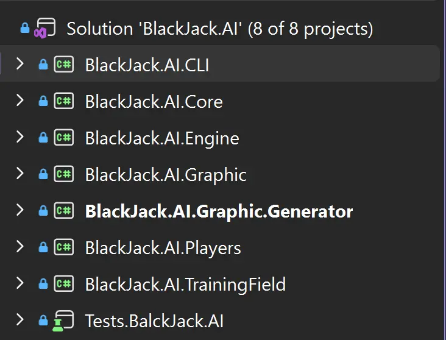
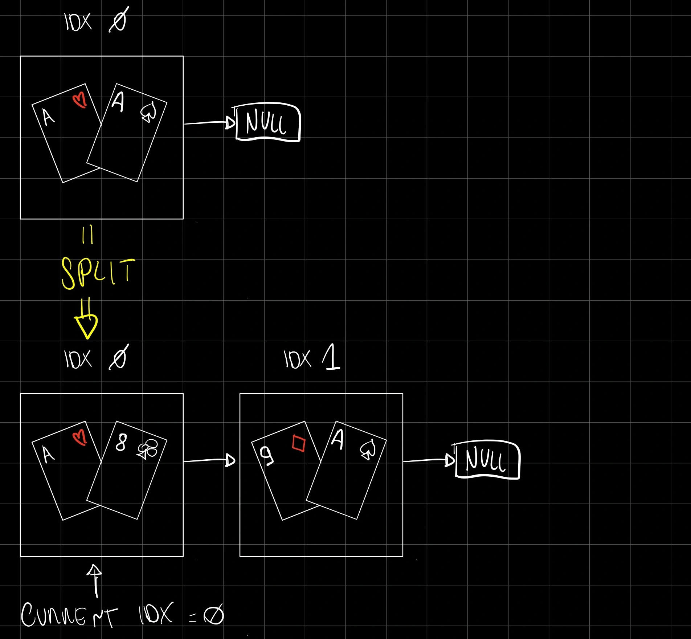
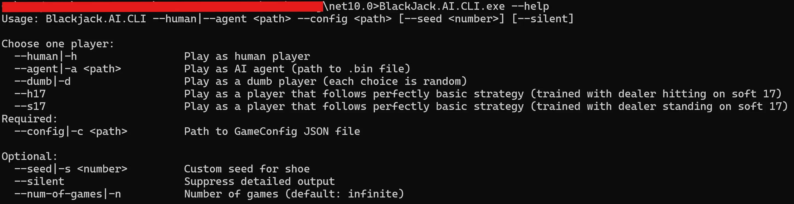
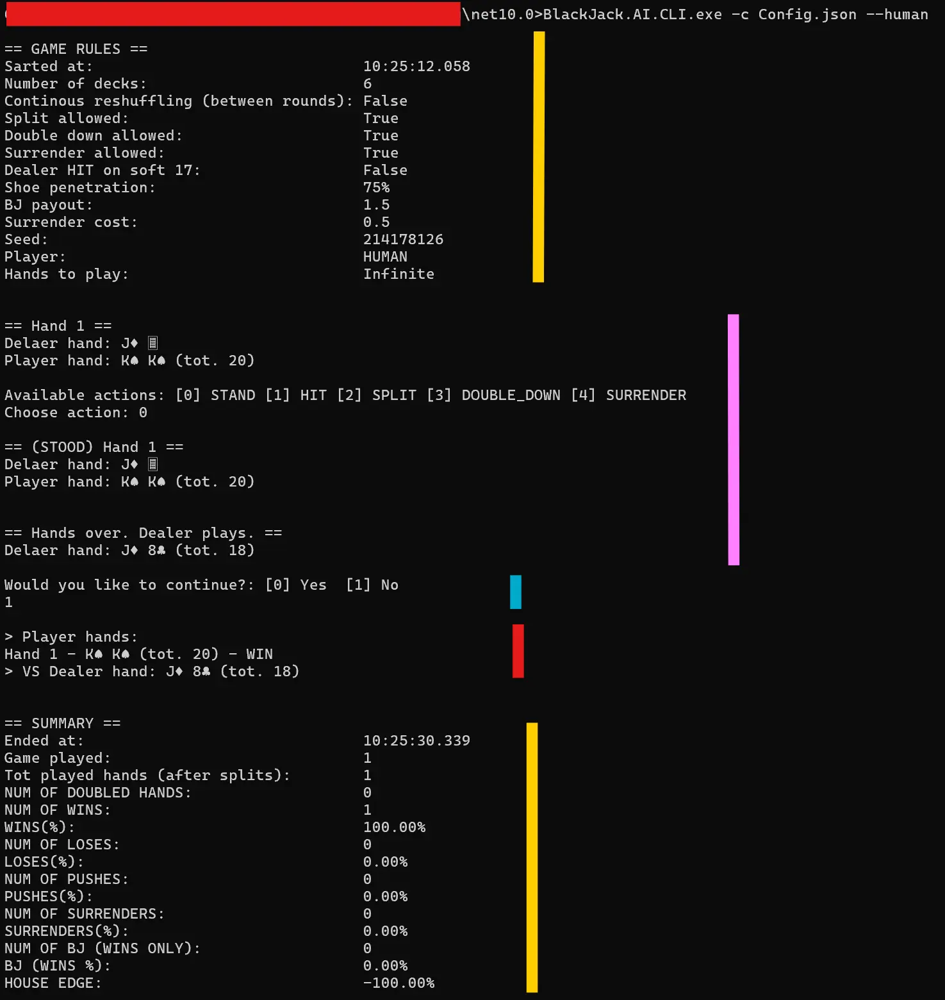

BlackJack AI - Part 1
To succeed I had to reinforcement learn myself on machine learning concepts
So much time has passed and so many things have happened since my last post.
But I still wanted to create my first AI agent and see it in action.
So let's get back to the basics: we left off with me realizing that reaching the basic strategy (and ignoring bankroll management for now) should be the first goal of this project.
The project felt a little overwhelming at first, so I started from my comfort zone: programming the game logic.

The game logic (BlackJack.AI.Core)
First of all, I created a library project to add to my solution: a Core library containing all the tools and models shared across the entire solution.
How a player's hand (and status) is modeled, the possible player actions, how a shoe (set of decks) behaves, the table (game) configurations… basically everything needed to describe the blackjack simulation lives here.
The most important choices I made at this stage were:
- how to implement the game (table) state
- how to implement the rules of the game
GameState
An immutable record class containing information about:
- player hands status
- dealer hand status
- the current game phase (PlayerTurn, DealerTurn...)
I use it to share the game state between different components of the solution, especially to orchestrate the game flow and the actions of different players.
The choice of an immutable record was meant to ensure the game state can be shared without the risk of race conditions (thread safety).
⚠️ GameState is meant to represent a player's hand status vs the dealer hand status. PlayerHands is a list of hands because the game state must handle split actions starting from the initial hand.
public required ImmutableList<HandState> PlayerHands { get; init; } // GameResult must be None until the end of the game
public required Hand DealerHand { get; init; }
public required GamePhase Phase { get; init; } // Phase: Start with PlayerTurn -> DealerTurn -> FinishedBlackjackRules
An idempotent class containing the rules of the game:
- hand status (soft/hard, pair, blackjack, bust) getters
- dealer actions logic
- hand score computation
- player hand vs dealer hand comparison
- …
All of them (and more) live here and are used to drive the simulation without editing the game state (see GameState above).
Main consumer of the Core library (BlackJack.AI.GameEngine)
This library contains the class that applies the game rules (BlackjackRules) on the game context (GameState) to simulate the game flow and the actions of the player and the dealer.
⚠️ Remembering that GameState represents one (splittable) starting hand vs the dealer hand: the SPLIT action operates by overriding the split hand with the first child hand and then adding a new hand (second child) to the hands list.
eg.

At this point I wanted to be sure I had implemented a solid foundation for the game logic, so I could start working on the AI agent without worrying about the basics.
Tests (Tests.BlackJack.AI)
Using NUnit and the AAA approach, I unit-tested the code around the core (mostly the shoe) and specifically the BlackjackRules and GameEngine classes.
Now that I was confident the game logic was solid, I started working on a CLI that could let me (and the agent in the future) interact with the game.
CLI (BlackJack.AI.CLI)
Since the design of the core logic was acceptable, the CLI was fairly straightforward to implement.
I started thinking about launch parameters and quickly landed on the main couple:
- a JSON config file to set game parameters (number of decks, reshuffling, allowed actions at the table...)
- a parameter to choose whether the player is human (interactive) or an agent (automatic, following a given strategy)
The parameters handler came first, then I implemented GameOrchestrator.cs to coordinate player actions via the game engine on the game state. The orchestrator handles one player starting hand at a time (splittable is ok, but only one starting hand at a time) vs the dealer hand.
As a view requirement, I added some fancy ASCII art and an interactive console game state to make it more engaging.
Wanting to make a CLI set of games reproducible (and eventually testable), I added a --seed / -s parameter to set a deterministic seed for the game engine (and the shoe, and all the random-based choices during execution).
Only later I managed to add runtime statistics and a --silent output mode (especially for automated players playing millions of hands).

Players (BlackJack.AI.Players)
While coding the CLI I ended up with an abstraction for "a player" acting on the game: the only relevant information the orchestrator needs from a player is which action to pick from the available actions for a given game state.
With that in mind, I grouped here the possible players that can interact with the CLI:
- a human player (interactive via stdin/stdout)
- a random player (a dumb agent that chooses actions randomly)
- an agent player (a more advanced agent that follows a given strategy from some sort of strategy provider; at this point I still wasn't sure what that provider should be)
- possibly more in the future...

Here is an example of a --human playing the game on the CLI; we can see 4 main sections:
- Summary - of the game rules and the played games statistics
- Player hands state/interaction - where the player choose which action to take from the one available
- Request to stop the game - available only when Hands to play: infinite is selected
- Final recap of the player hands vs dealer hand - helpful when splitted / multiple hands have been played
Part 1.5 - Time to study Reinforcement Learning
At this point the playfield seemed to be set: the game logic is solid, the CLI is working… what am I missing? Well, just the whole point of the project: the AI agent.
I started looking online for resources about reinforcement learning (RL from now on) and found a lot of material about the subject.
I started from the Wikipedia page and moved on to university papers. After a deep dive into Markov decision processes and some heavy mathematical notation, I pulled out a few key points:
- “Reinforcement learning problems involve learning what to do—how to map situations to actions—so as to maximize a numerical reward signal...
...The formulation is intended to include just these three aspects—sensation, action, and goal—in their simplest possible forms without trivializing any of them.”
Ref: Sutton & Barto (Stanford hosted PDF) - Reinforcement learning is not supervised learning (learning from a labeled training set), and it's not unsupervised learning either (finding patterns in unlabeled data).
- The goal of RL is to maximize its reward signal.
- Reinforcement learning is a specific type of machine learning (ML from now on).
- ML is a subcategory of artificial intelligence that learns from data to improve performance on a specific task (no deterministic if/else at the end).
- A policy is a function that maps situations to actions: it defines how the agent behaves in a given situation.
- The value function specifies what is good to do in the long term (future rewards), differently from the reward signal, which is about what is good in the immediate sense.
- Rewards differ from values: rewards are given by the environment; values are re-estimated by the agent on each episode.
- An episode is a complete sequence of interactions between the agent and the environment.
- When we speak of a model, we mean a model of the environment used by the agent to infer how the environment will react to its actions (a prediction). In short: the model can be used to plan the best next action by simulating what happens next.
- When there is an "external adversary" (non-stationary environments), standard single agent RL assumptions break down; you usually need a game-theoretic framing (MARL, self-play, opponent modeling...) and training becomes harder/less stable. (Note for me... for future projects.)
- RL can be refined over time; it doesn't necessarily need to be destroyed and reconstructed from scratch each time.
- The training loop for the agent will look something like:
- the agent reads the (discretized and encoded) state of the environment
- the agent chooses an action (choosing whether to explore or exploit)
- the environment reacts to the action
- the agent receives the reward signal and updates its values (and propagates them eventually)
- the agent receives the new state of the environment and the loop starts again unless the episode cap is reached
An agent can be trained with:
- on-policy methods: the agent explores the environment with the same policy that is being optimized; it "estimates the value of a policy while using it for control".
eg.
the agent starts by playing randomly and eventually learns a good blackjack policy. - off-policy methods: the agent learns from experience generated by a different (behavior) policy.
eg.
the agent tries to follow an already existing basic strategy (target policy) and learns around it.
Off-policy requires weighting rewards so experience generated by the behavior policy becomes compatible with the target policy (see Importance Sampling).
Gathered all this knowledge and ready to test my understanding, only one thing remained to do…
Let's code!
Part 1.9 - The training (BlackJack.AI.TrainingField)
I started by recreating an efficient (and less fancy than the CLI one) game orchestrator: TrainingEpisodeOrchestrator.cs.
While writing the class I figured out how to implement the TrainingPlayer, a special player that embodies the chosen learning algorithm:
A Q-Learning agent with fixed ε (exploration rate) and fixed α (learning rate):
Q(s, a) ← Q(s, a) + α [r + γ max_{a'} Q(s', a') - Q(s, a)]Here Q(s,a) is the Q-value: the "quality" of doing action a in state s. In practice, it's an estimate of the expected discounted return I get if I do a now and then keep playing "well" after that.
A Q-table is just a big lookup table that stores those values for every (state, action) pair.
The intuition behind the update is the Bellman idea: "value now" is "reward now + best value later".
The goal was to write a player that trains itself over a large number of episodes (following the Bellman idea) and converges to the known basic strategy tables, building a valid Q-table (of Q-values) to pass to an AgentPlayer for the CLI.
Early on I understood that what I was implementing wasn't the right choice for my use case: the Q-tables I obtained were simply bad, comparable to a (semi) random agent in some scenarios.
After hours of testing different training configurations (ε, α, number of decks, episodes, game rules...), I realized my knowledge was still too superficial, so I decided to take a step back and immerse myself in the papers again.